7. Drive your own Anim Blueprint
Goal: keep your own mesh and Anim Blueprint on a kit character and let your Anim Blueprint read what the hero is doing (slide, wall run, grind ...), so your own states can play your own clips.
You need: Unreal Engine 5.3–5.8 with the plugin enabled (pictures: 5.7) and your character Blueprint on Corridor Character (the Quickstart's Option B: Class Settings > Parent Class > CorridorCharacter, then Compile). Here that is the Third Person template's BP_ThirdPersonCharacter with its Anim Blueprint ABP_Unarmed, in the template level Lvl_ThirdPerson. Stop Play before you edit.
Part 1: your mesh and Anim Blueprint stay
- Open your character Blueprint, click Class Defaults and type Animation Mode in the Details search box.
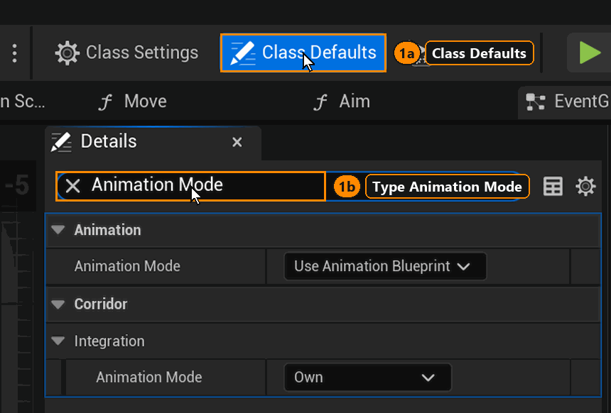
- Two rows match: Animation > Animation Mode belongs to the mesh; the kit's row is the one under Corridor > Integration. Open that Animation Mode list and pick External. Your mesh and Anim Blueprint now stay; Action Slot (default DefaultSlot) is the Slot node in your Anim Blueprint that the kit's action clips play on.
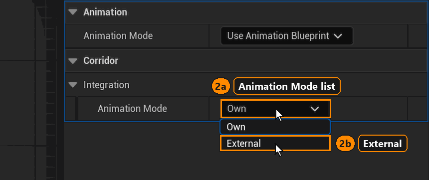
- Click Compile.
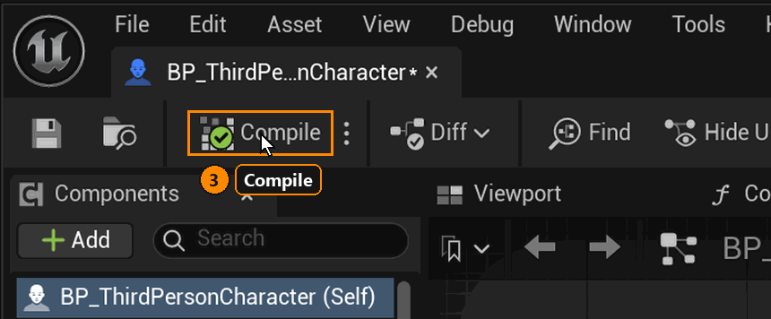
Part 2: read the hero's action in your Anim Blueprint
- Open your Anim Blueprint and click its EventGraph tab. Event Blueprint Update Animation runs every frame; in ABP_Unarmed it leads into a Sequence node. Click Add pin on the Sequence node.
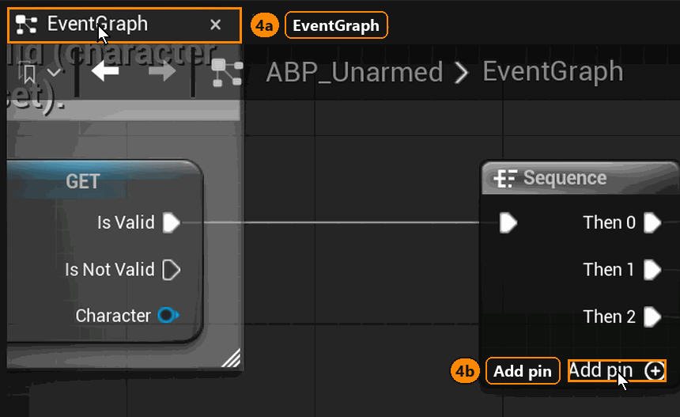
- Drag from the new Then 3 pin, type Cast To CorridorCharacter and pick it.
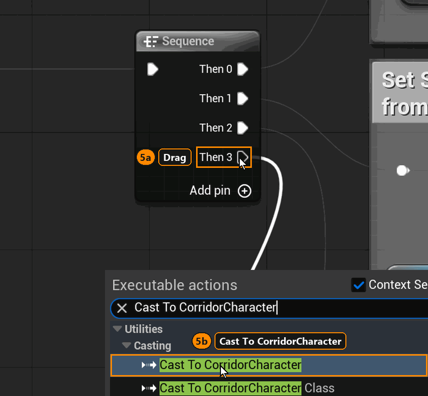
- Drag from the cast's Object pin, type Try Get Pawn Owner and pick it: the pawn your Anim Blueprint animates.
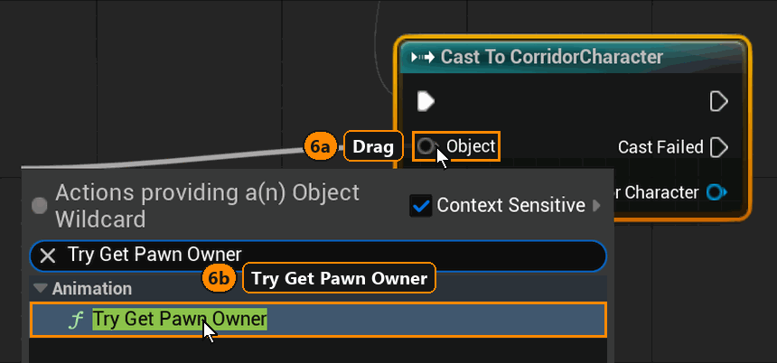
- Drag from As Corridor Character, type Get Corridor Action and pick the first entry (the one marked (CorridorHero) is the hero component's copy).
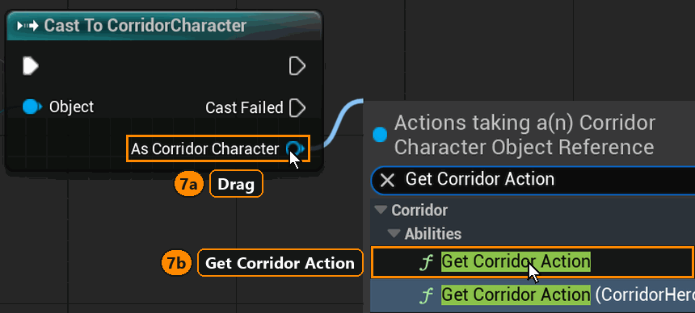
- Drag from the Return Value pin of Get Corridor Action, type Promote to variable and pick it. A Set node appears and the new variable's name is selected in My Blueprint: type CorridorAction and press Enter. It holds what the hero does this frame.
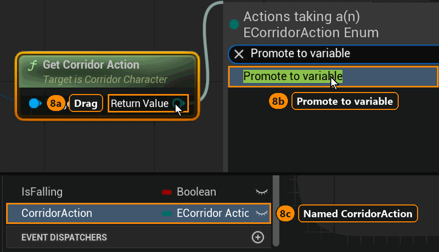
- Drag from the cast's top execution output (top right) to the execution input of the new Set node.
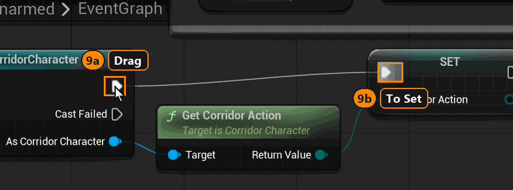
-
Click Compile, then save both Blueprints.
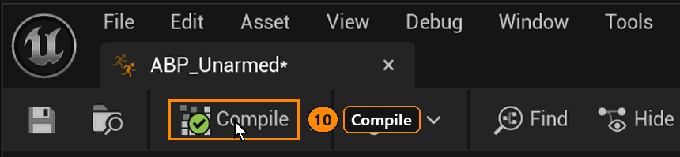
Use CorridorAction in your AnimGraph like any variable: for example a state Wall Run in your state machine, entered when CorridorAction equals Wall Run and left when it does not. Values: None, Dead, Mount, Grind Rail, Rail Hang, Wall Run, Rope Swing, Cyclone, Spin, Slide, Slam, Crouch, Glide, Double Jump. For sounds or effects, bind On Action Started and On Action Ended in your character's Event Graph: they fire once per action.
Result
Click Play, run and press K (or Left Shift, gamepad B) to slide. ABP_Unarmed's CorridorAction reads Slide, the mesh and Anim Blueprint stay SKM_Quinn_Simple and ABP_Unarmed, and the kit's slide clip (A_Hero_SlideLoop) plays as a montage on DefaultSlot: the character's own Anim Set is empty, so the hero uses the active theme's DA_HeroActions (measured in the frozen frame below).
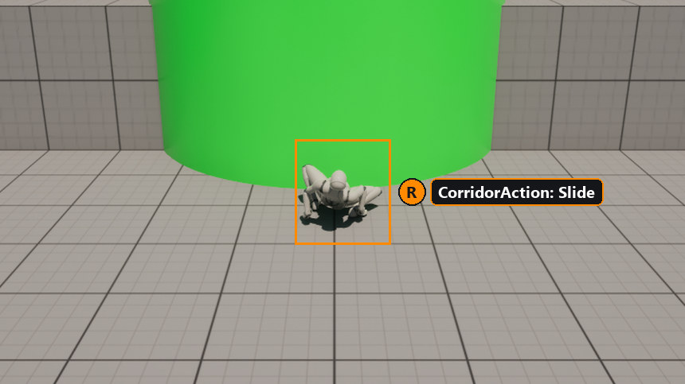
If it doesn't work - CorridorAction stays None: the cast fails because the character is not a Corridor Character, or the new pin is not wired from Event Blueprint Update Animation. - The kit's clips still play over yours: with an empty Anim Set on the character the hero uses the active theme's Anim Set (both shipped themes use DA_HeroActions), and its clips play on Action Slot. For none of the kit's clips, duplicate your theme, clear the copy's Hero > Anim Set and select the copy on the level's BP_Control > 3 Theme (a level without BP_Control uses the project's Default Theme, topic 12); leave the character's own Anim Set (Class Defaults > Corridor > Animation) empty. - You want the kit's clips but none shows during a slide or spin: your Anim Blueprint needs a Slot node named like Action Slot before the output pose (ABP_Unarmed has Slot 'DefaultSlot').
See also: Recipe 4 · Quickstart, Option B · topic 12, Themes · topic 15, Call the kit from Blueprint